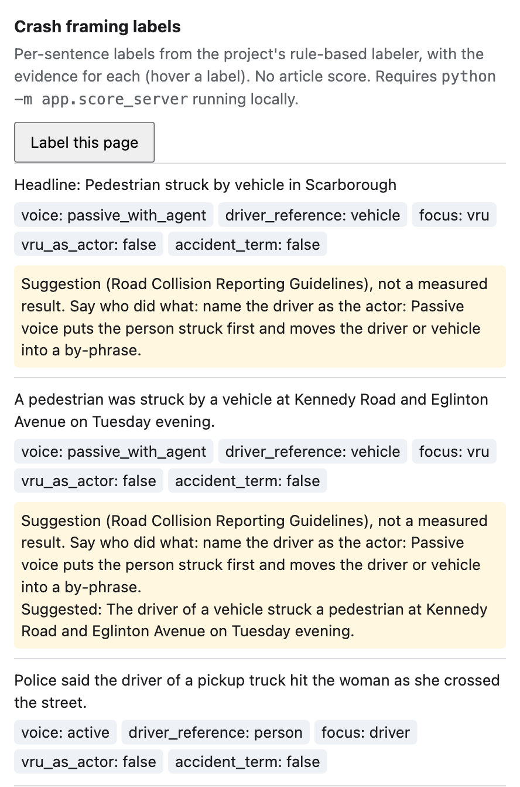

Five ways to write the same crash
The codebook sorts every crash sentence by the grammar of its impact clause. The forms differ in who acts. In the active voice a vehicle or driver is the subject that does the striking. In a passive the person struck is the subject, and the vehicle moves into a “by” phrase or drops out. Intransitive and nominal sentences describe a collision without anyone striking anyone.
activepassive_with_agentagentless_passiveintransitivenominalSource: analysis/tables/overall_by_text_source.csv
Table view
| Voice | Rate | 95% CI | Sentences |
|---|---|---|---|
active | 11% | 9–12 | 1,687 |
passive_with_agent | 51% | 48–53 | 1,687 |
agentless_passive | 12% | 10–13 | 1,687 |
intransitive | 3% | 3–4 | 1,687 |
nominal | 23% | 21–26 | 1,687 |
Together, the three forms with no agent (agentless_passive, intransitive, nominal) make up 39% of newsroom crash sentences. Ralph et al. (2019) found “one-third” in US local news. The word “accident” appears in 0.8% (0.3–1.4) of crash sentences, far below the 47% Ralph et al. reported. That gap was checked against the raw text: most remaining uses are charge names such as “leaving the scene of an accident.”
personvehicleabsentSource: analysis/tables/overall_by_text_source.csv
Table view
| driver_reference | Rate | 95% CI | Sentences |
|---|---|---|---|
person | 12% | 10–14 | 1,687 |
vehicle | 60% | 57–62 | 1,687 |
absent | 28% | 26–30 | 1,687 |
Counting only sentences that name someone or something as the striker, the vehicle is named 83% of the time. Ralph et al. found 81%. Across whole articles the driver is usually present somewhere: 79% (76–82) of ordinary crash reports mention a driver, and 86% (80–91) of reports where the driver fled, was impaired or was charged. Those intervals overlap, so this corpus does not show the “rogue driver” gap described by Fevyer and Aldred (2022).
Where the wording comes from
Every crash sentence is tagged by where its wording comes from: quoted (inside quotation marks), police-matched (close to the text of a linked Toronto Police release), or newsroom (everything else). The tag is assigned in that order. Quoted text is scored separately and left out of the rates above.
focus is the least reliable rule (macro-F1 0.57; see checks).- Newsroom
- Police-matched
voice = activevoice = passive_with_agentdriver_reference = persondriver_reference = vehicledriver_reference = absentfocus = vruSource: analysis/tables/overall_by_text_source.csv
Table view
| Measure | Newsroom | Police-matched |
|---|---|---|
voice = active | 11% (9–12) | 30% (22–39) |
voice = passive_with_agent | 51% (48–53) | 29% (20–38) |
driver_reference = person | 12% (10–14) | 17% (10–25) |
driver_reference = vehicle | 60% (57–62) | 35% (26–44) |
driver_reference = absent | 28% (26–30) | 48% (39–57) |
focus = vru | 63% (60–65) | 48% (39–58) |
Police-matched sentences use the active voice about three times as often as newsroom sentences (30% against 11%; the intervals do not overlap) and name the vehicle as the striker less often. One limit: only 218 articles could be linked to a release, and those articles are more often about fatal and hit-and-run crashes than the rest, so the comparison holds for that subset. Only about 42% of releases in the period survive in the Wayback Machine, so some newsroom sentences may restate releases the project could not see.
Comparisons: headlines, follow-ups, outlets and cities
Headlines use the passive with an agent more often
focus is the least reliable rule (macro-F1 0.57; see checks).- Headlines
- Body
voice = passive_with_agentfocus = vruvoice = activeSource: analysis/tables/headline_vs_body.csv
Table view
| Measure | Headlines | Body |
|---|---|---|
voice = passive_with_agent | 65% (61–68) | 49% (47–52) |
focus = vru | 81% (78–84) | 62% (60–64) |
voice = active | 3% (2–4) | 12% (10–13) |
Follow-up articles are more often active
- First reports
- Follow-ups
voice = activedriver_reference = vehicleSource: analysis/tables/initial_vs_follow_up.csv
Table view
| Measure | First reports | Follow-ups |
|---|---|---|
voice = active | 12% (10–13) | 23% (19–28) |
driver_reference = vehicle | 58% (56–61) | 33% (28–39) |
Outlets overlap on most measures; CityNews and CTV differ on a few
Of 72 outlet comparisons (12 measures, three pairs of outlets, body text and headlines), 5 have intervals that do not overlap, all CityNews against CTV. In body text, CityNews named the vehicle as the striker more often, 62% (58–67) against 52% (47–57), and wrote fewer nominal sentences, 20% (16–25) against 31% (27–35). In headlines, CityNews named the vehicle more often, 76% (69–81) against 57% (51–64), and the driver as a person less often, 5% (2–8) against 15% (10–20). With this many comparisons, a few gaps can arise by chance. Global has only 31 articles in the common window, so its intervals are wide. The Toronto Sun, blogTO, Toronto Today and CBC were planned but could not be collected within their terms or robots.txt, so these outlets cover a narrow range of editorial positions.
driver_reference = vehiclevoice = nominalvoice = activeSource: analysis/tables/outlet_without_wire.csv
Table view
| Measure | Group | Rate | 95% CI | Articles |
|---|---|---|---|---|
driver_reference = vehicle | CityNews Toronto | 62% | 58–67 | 202 |
driver_reference = vehicle | CTV News Toronto | 52% | 47–57 | 231 |
driver_reference = vehicle | Global News | 52% | 41–64 | 31 |
voice = nominal | CityNews Toronto | 20% | 16–25 | 202 |
voice = nominal | CTV News Toronto | 31% | 27–35 | 231 |
voice = nominal | Global News | 32% | 20–46 | 31 |
voice = active | CityNews Toronto | 13% | 9–16 | 202 |
voice = active | CTV News Toronto | 11% | 8–14 | 231 |
voice = active | Global News | 6% | 1–11 | 31 |
Vancouver coverage leaves the driver unnamed less often
vehicle or absent). Body sentences of first reports, quoted text excluded, police-matched text included.Source: analysis/tables/compare_cities.csv
Table view
| Measure | Group | Rate | 95% CI | Articles |
|---|---|---|---|---|
| Driver not named | Toronto (CityNews, CTV, Global) | 88% | 86–90 | 751 |
| Driver not named | Vancouver, English | 76% | 71–81 | 103 |
| Driver not named | Montreal, English | 85% | 81–88 | 192 |
| Driver not named | Montreal, French (Radio-Canada) | 78% | 68–86 | 31 |
Vancouver crash sentences left the driver unnamed less often than Toronto's; the intervals do not overlap. Montreal's English coverage is close to Toronto's. These are rule labels, tuned on Toronto text and not checked by hand in the other cities. Canadian Cycling Magazine's Toronto crash reports left the driver unnamed in 59% (44–72) of crash sentences, from only 13 articles.
Bike lanes and transit: positions belong to sources
In coverage of bike lanes and transit, the outlets almost never state a position in their own voice. Across the annotated sample of about 1,600 sentences, 511 state a position and 7 of those give it as the outlet's own: 5 of CityNews's 450 body sentences that name bike infrastructure (CTV 0 of 212, Global 0 of 293), and one transit sentence each at CityNews and Global.
These stance labels came from an LLM annotator reading the codebook, not from a trained model, and no human checked them. A second run of the same model on 100 sentences agreed with kappa 0.94 for bike infrastructure and 1.0 for transit, which is self-consistency, not accuracy. No stance model passed validation.
Positions from sources are common, especially on bike lanes. For this study the newsroom text is split by who is speaking: quoted sentences sit inside quotation marks, attributed sentences report what a named source said without quoting it, and newsroom is the rest. Police matching is not used here. newsroom sentences with a position still mostly report what a person or group said, because the attribution detector misses about a quarter of reported speech.
- Support
- Oppose
quotedattributednewsroomSource: analysis/tables/v15m_infra_by_source.csv
Table view
| Measure | Support | Oppose |
|---|---|---|
quoted | 41% (33–48) | 27% (20–35) |
attributed | 29% (24–34) | 23% (18–28) |
newsroom | 19% (14–24) | 9% (6–12) |
- Support
- Oppose
quotedattributednewsroomSource: analysis/tables/v15m_transit_by_source.csv
Table view
| Measure | Support | Oppose |
|---|---|---|
quoted | 26% (17–35) | 0% (0–2.6) |
attributed | 5% (3–9) | 0.6% (0.0–1.5) |
newsroom | 4% (2–7) | 0% (0–1.3) |
CityNews bike-lane sentences carry a source's position more often than at least one other outlet in each text source; for quoted sentences, 80% (71–88) against 54% (38–68) at CTV. This is a difference in which positions get reported, not in the outlets' own views. In newsroom bike-lane sentences the most common policy frame is law, at 39% (33–45). Across the periods of Ontario's Bill 212, legal framing was 19% before the plan, 33% at its announcement, 55% while the law was in force, 64% under the court injunction, 47% after the law was struck down and 31% after the appeal was allowed. Some periods hold fewer than 30 sentences; the write-up gives the intervals.
How the labels were checked
The test labels came from an LLM annotator, not a human. A Claude Code subagent, given only the codebook and the raw sentences, labeled the test set. Accuracy below measures agreement with that model's reading of the codebook. A second run of the same model gave the same crash labels on every shared sentence. That is self-consistency: it shows the codebook gives that model stable answers, not that independent people would agree. The pipeline itself uses no LLM API.
| Label | n | Accuracy | F1 | 95% CI |
|---|---|---|---|---|
voice | 52 | 0.98 | 0.96 | 0.75–1.00 |
driver_reference | 52 | 0.90 | 0.85 | 0.71–0.96 |
focus | 52 | 0.85 | 0.57 | 0.32–0.82 |
text_source | 40 | 0.90 | 0.85 | 0.66–0.97 |
Random test rows only; F1 is macro-averaged over each label's values. Voice detection was also checked on human-labeled public data (UD English EWT passives: F1 0.85). Two labels, thematic_cue and vru_conduct_detail, did not reach a usable accuracy across the corpus, so the article rates built from them are not reported as findings.
Coverage against police-reported crashes
The corpus covers a minority of serious crashes. Of the police-reported pedestrian and cyclist crashes that killed or seriously injured someone (City of Toronto KSI open data), 26% (23–30) got a first report in the corpus: 53% (44–63) of fatal crashes and 21% (18–25) of serious-injury crashes. These are lower bounds, since a report has to name both streets of the crash location to link.
Every judgment call is logged in DECISIONS.md, and label definitions are in codebook.md. Scope rules were tightened after annotators found US wire stories and car-only crashes in the sample, which cut the corpus from 1,671 to 942 articles before later collection.
Label crash sentences while you read
The browser extension lists the crash sentences on the page you are reading, with each label and the rule evidence behind it. It uses the same rules as the study. It gives no article score or grade. For sentences outside quotation marks it shows suggestions based on the Road Collision Reporting Guidelines, marked as suggestions, not measured results.
- Get the code and set up Python 3.11.
git clone https://github.com/Shen-42/media-bias.gitcd media-biaspython3.11 -m venv .venv && . .venv/bin/activatepip install -e ".[dev]"python -m spacy download en_core_web_trfpython -m spacy download en_core_web_sm - Start the scoring server and leave it running.
It listens onpython -m app.score_server127.0.0.1:8765only and answers only browser extensions. Page text is scored in memory and never saved. - Load the extension in Chrome or another Chromium browser. Open
chrome://extensions, turn on Developer mode, choose Load unpacked, and pick theextension/folder. - Open a news article and click the extension's toolbar button, then Label this page. Hover a label to see its evidence. Pages marked as French (
<html lang="fr">) use the French rules, which needpython -m spacy download fr_core_news_smandfr_dep_news_trf.

voice: passive_with_agent shows the rule evidence, here “passive ‘struck’ + by-agent ‘vehicle’.”